In 2014, Catherine Clifford from Entrepreneur Magazine predicted that the mobile app market would raise…
30 Top Websites & Blogs That Are Powered By WordPress
WordPress is one of the most user-friendly content management systems, especially for the non-tech savvy. I’ve boasted on several occasions that you can create WordPress sites and handle a reasonably high amount of traffic. Apart from its remarkable user friendliness, you can use WordPress for a multitude of purposes.
Now it is time to test that boast. I’m going to list a few of the world’s most visited websites which run on WordPress.
Please note, some of these websites may not rank as highly as you might expect on Alexa. If that is the case for any particular website here, it happens to cover a niche that isn’t as popular or there aren’t any better WordPress websites in the particular niche.
The reasoning or the motivation behind this post is to not only demonstrate the power of WordPress in terms of ability to create high/medium traffic sites, but also to demonstrate WordPress’s usability across a wide spectrum of possible purposes and to show how organizations, corporations, small businesses, non profits, pop stars and athletes use WordPress for their on-line platforms.
In no particular order, here are some awesome websites which run on WordPress.
Quartz
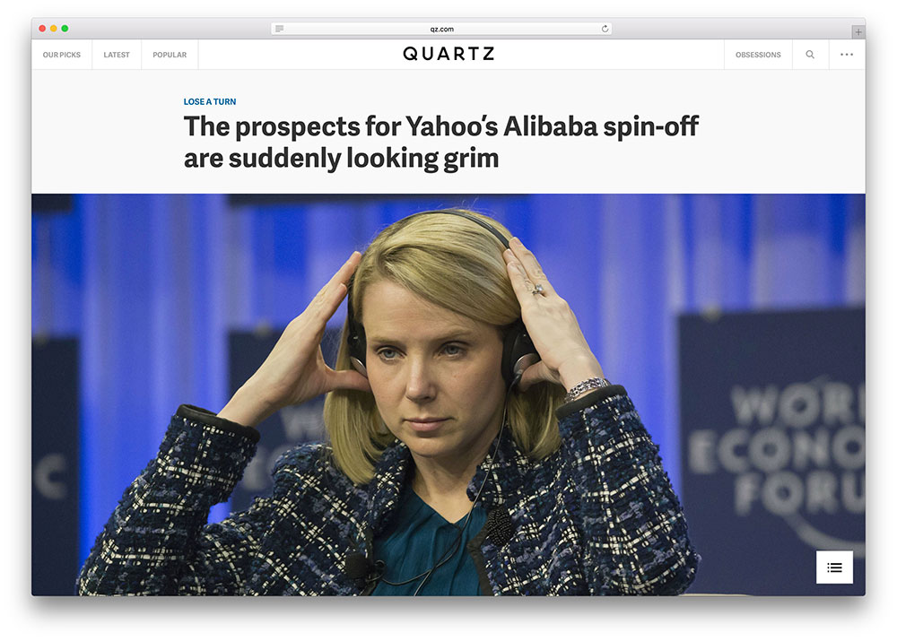
An awesome news outlet born in 2012 to deliver business news across the world and cover every aspect of the new global economy. This website was created and designed to meet the needs of the modern web, where people reading the news are constantly on the move. Thus, it naturally looks great on tablets and mobile phones.
Quartz is an excellent source of credible information with a great emphasis on digital storytelling as opposed to how traditional news sources operate. The website itself was designed so as to bring the benefits of the web and deliver it with the elegance of an application.
The website is minimal, as are the menus; there is little to no distraction and the website enhances readability. A single full-screen image dominates individual posts. These posts provide an initial perspective and a glimpse into the topic of the post. But what follows after it is great content with well chosen typography and few images.
The website also seems to operate on an infinite scroll, which is great for reading continually. It reduces the burden on menus for navigation of the site.
The New Yorker
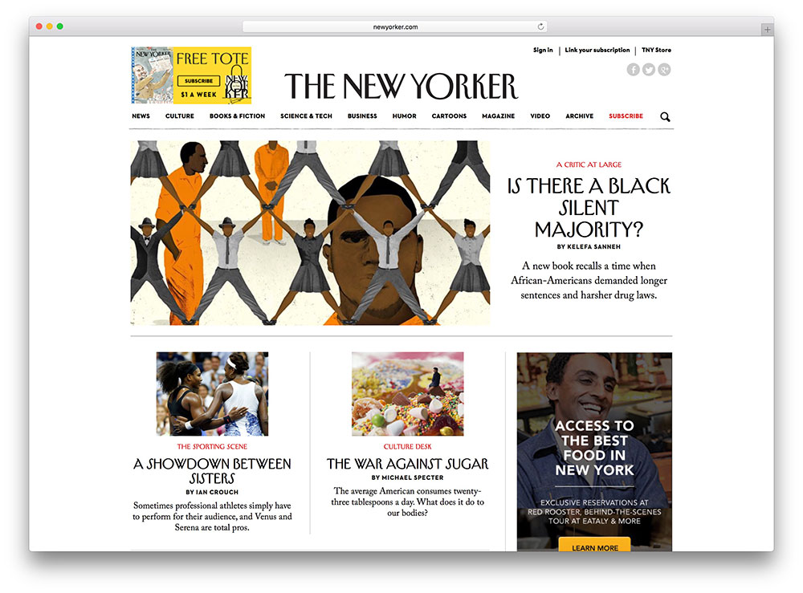
A weekly magazine which provides a melange of news on international affairs, popular culture, arts, business, science, technology and politics. And to top it off, they also report on poetry, humor and cartoons. Again, the theme here seems to be the same; the website can easily be viewed on mobile devices. The magazine is available for mobile readers via an app, which can be found in the App Store, on Amazon, and Google Play.
A traditional magazine relies on subscriptions for revenue, as does The New Yorker. They have digital, print and a combination plan, which helps them generate revenue. The digital plan is a lot better option than the print edition. That is because you’ll have access to their complete digital archives which goes all the way back to 1925. Subscribers can access content based on their membership. Basically, you can login to access premium content from anywhere in the world.
The website’s menu is a whole lot larger than Quartz, as you might imagine given the breadth of topics that it covers. The website is dotted with imagery of all sizes, and yet there is a lot of white space on the site. The publishing mechanism that WordPress provides makes it possible for creative writers and artists to publish content via normal written content, podcasts, videos, slideshows and interactive graphics easily.
BBC America
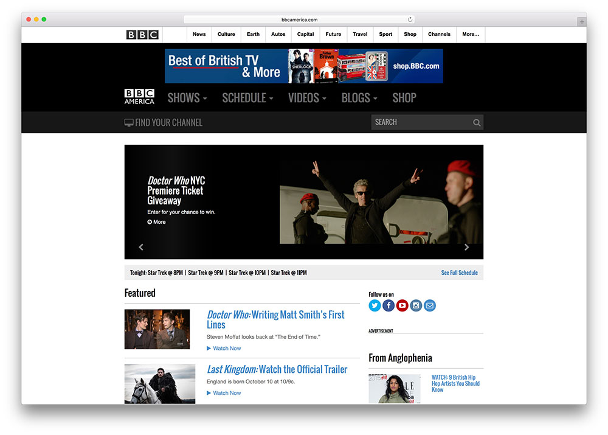
BBC America brings the best of entertainment, including natural history, movies, sci-fi and drama. Ever heard of Doctor Who, Broadchurch, Man versus Wild or Orphan Black? Well, BBC America brought to you those shows.
A lot of the content on the website is primarily about TV shows of different genres. In addition, great depth provides scheduling information; there’s a lot of video content in the form of teasers, and plenty of blog content about the TV shows and the entertainment business.
There is also a shopping tab among the menu options. It permits the purchase of TV series like Top Gear and Sherlock. Although, I must point out that this leads to a BBC sister site, which does not run on WordPress.
In all likelihood, the followers of TV series use the website more as reference to keep track of the timings of their favorite shows and their release dates. And the website’s scheduling information structure might support that claim; it is well built and intuitive to handle. In fact, the schedule page of BBC America seems to be running on Thematic, which is a free WordPress theme.
This website is genuinely multifaceted, and delivers a multitude of content types. A lot of the content also seems to link back to the mother site of BBC, which creates a traffic loop. There is a menu atop the website with a wide spectrum of topics, which links back to BBC’s primary news website.
Time Inc.
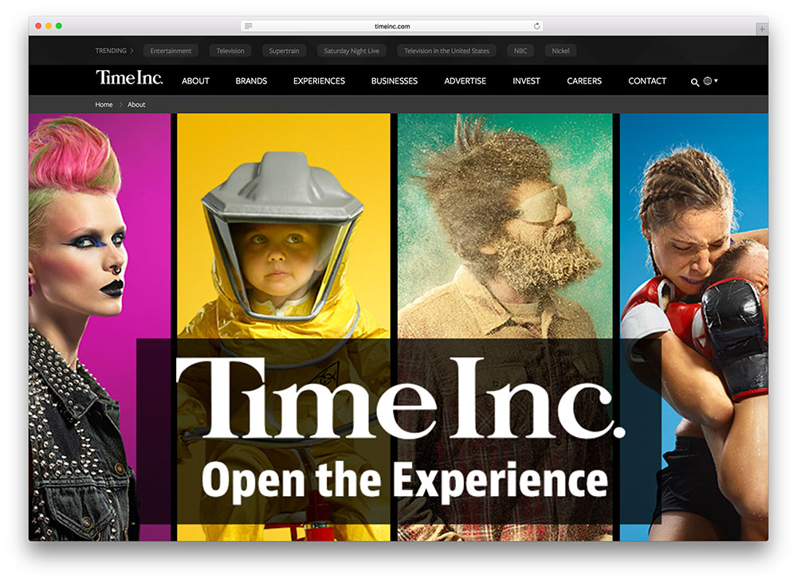
Time Inc., one of the most well known brands in the world. Let me put this into perspective: nearly 50% of the population of the United States will engage with a Time Inc. brand in a month. And they run their website on WordPress. Although, some of their brands may have other content management systems working in tandem with WordPress, or may run on a non-WordPress platform.
That being said, it should take anything away from the fact that WordPress is incredibly versatile and can be used by a corporation that controls such a sizable portion of the media we consume. The website is largely descriptive of the Time brand and the brands they have in their diverse portfolio.
You’ll find on the site what you might expect from any reasonably sized company. There is a great deal of information about their leadership, company profile, history, corporate social responsibility, investment information and career opportunities. They even report their quarterly earnings in the first page, as you might expect from any corporation whose primary motive is to make money for the shareholders.
But in comparison to most corporate websites, this one is not in the least bit dry or boring. As you can see above, the imagery is excellent and greatly distracts us from the fact that it is a website of a pretty big corporate entity.
Time.com
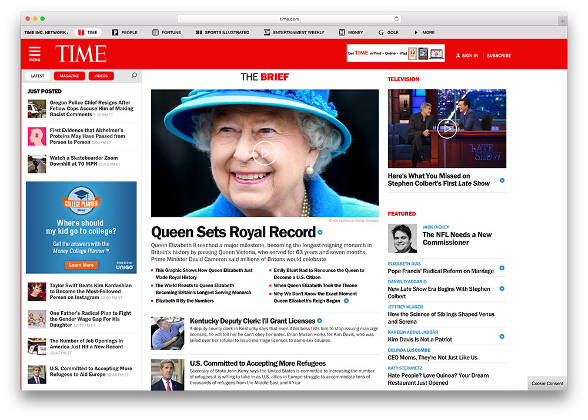
A brand owned by Time Inc.,Time magazine is one of the most widely recognized and read magazines in the world. A readership of around 25 million strong and as of 2012, the eleventh most circulated magazine in the United States.
The website is what you might expect from a news outlet, the site design is based on a side menu. The website uses a lot of red especially in the navigation options and unlike previous websites, there is little empty white space. The emphasis is far more on delivering news content as quickly as possible, there are also articles with great insightful depth in the magazine. Although, when you compare the website to Quartz, there is definitely less of an emphasis on readability.
They publish on pretty much every topic you can imagine and the landing page has a lot of content on it. Images the site uses, some large and some thumbnails accompany the various articles on the site.
As you can imagine such a website probably has a great number of authors and full time staff. It must certainly help to have WordPress, when publishing so much content produced by a number of authors and then checked by multiple editors. They also work on a subscription model for premium content.
TechCrunch
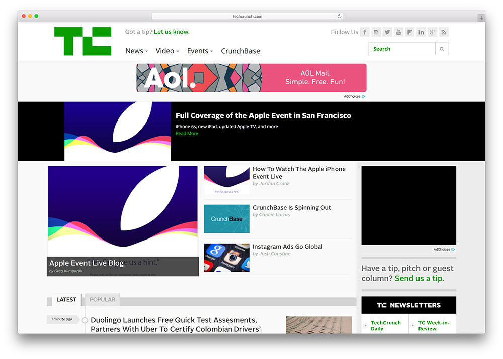
TechCrunch covers breaking news about the technology sector; they write about startups and a plethora of Internet products. Micheal Arrington starts this website to share information about new companies that were changing technology.
The website menu is relatively simple, and the content itself, which is largely text, some images & video, is presented in a grid-like format working in tandem with a timeline system. Said grid displays posts according to publish time. Since the emphasis lies in creating content about breakthroughs before anyone else, the timeline format is ideal for presenting content.
There’s also a purely video-based section on the site, which is dedicated to delivering new tech, interviews with tech industry experts & innovators and product reviews. TechCrunch is also well-known for its startup battlefield, which is dedicated to information on startups and their funding.
IFC
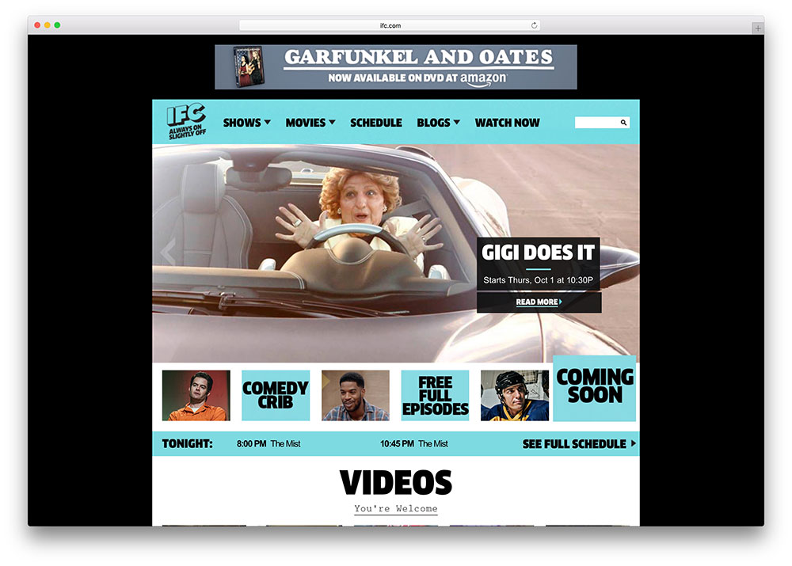
IFC is a website dedicated to the entertainment industry with a focus on drama and comedy. It holds a lot of scheduling information which are easily accessible for visitors. The site also hosts information on movies, two blogs and some video content. IFC is unlike most websites where more white space is preferred; the site’s background is black, and the typography is bold and black, against a light blue background.
007
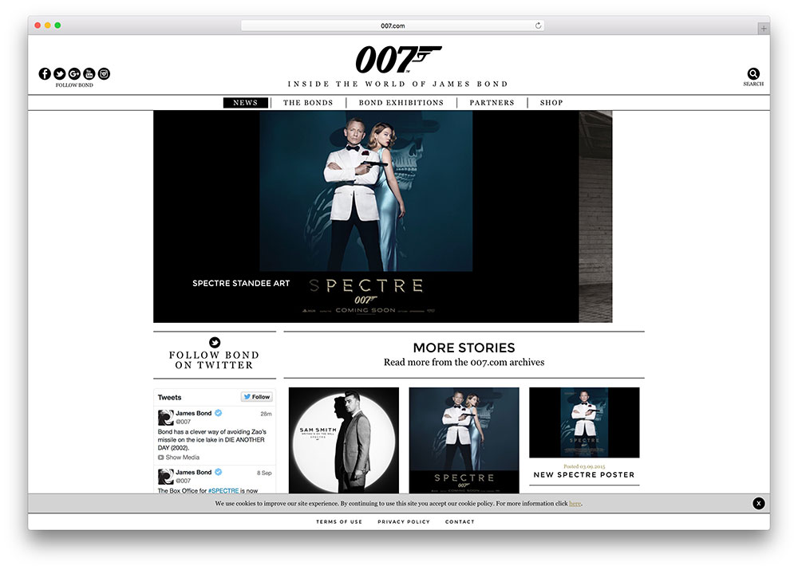
One of the most stylish, suave characters to have ever existed, James Bond is not just a spy; the character has been a lot more, and represents a regal elegance which you might only associate with the choicest of brands. So creating a website for the famous 007 character requires an equal amount of sophistication in design.
The site’s design is, as you might expect, regal, to say the least. There are three colors involved here: one’s the site’s background, the text’s background, and the text itself. There is a lot of white space, while the white text is placed against a black background.
The website is modeled on a portfolio or grid with the images making up for what some might consider a lack of color, given the abundance of black and white. But the use of only black and white primarily is probably what makes this site look great.
If one were ever concerned whether a WordPress website can be designed for luxury brands, then this website is a great example of how awesome a WordPress site can be when it falls on the hands of the right developer.
Thrive Magazine
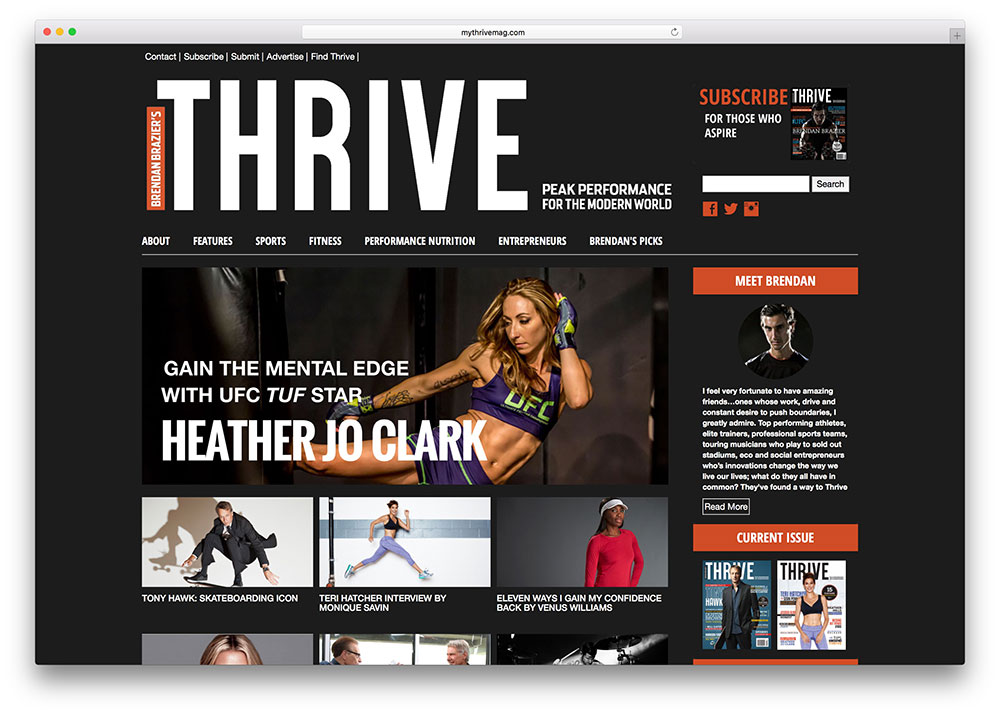
A magazine that reports on sports, fitness, entrepreneurship and nutrition. Thrive employs a dark background set against big, white text, and a simple primary menu to navigate the website. The site does not particularly rank highly, but it does boast a very simple and straightforward design.
I’ve seen many websites use minimal designs with white backgrounds. Here’s a rather minimal website that uses a dark background. Besides, a website that covers fitness is a good addition to this collection.
Van Heusen
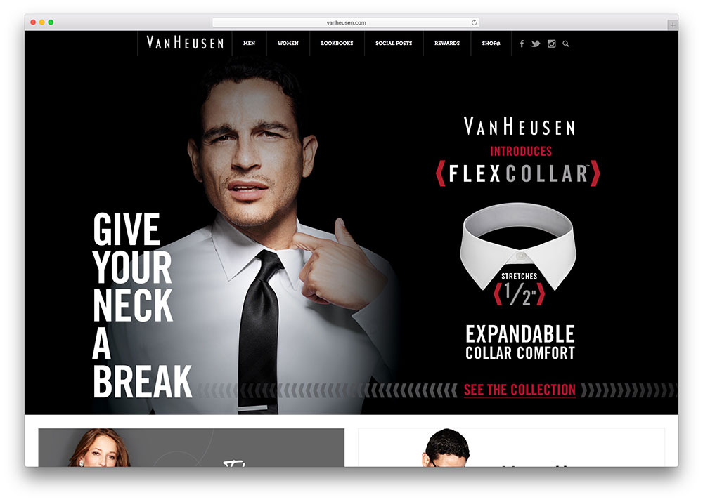
Yet another brand that is associated with style and regal professionalism, very similar to the 007 brand. The website contains a ton of information on their various products, loads of images of their catalog, and a few videos advertising the inventiveness of their clothing line.
The Next Web
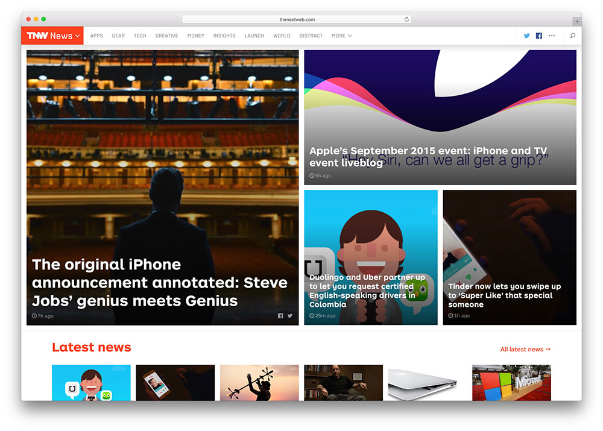
If you are like me, you’ve probably followed The Next Web religiously. The site covers pretty much anything that comes out of the Internet and technology. There is a lot of content about how technology interacts with the world as we know it. They discuss money, insights into the tech world, and a whole lot of other cool stuff.
The website is what you might expect from a typical tech website: a lot of images with the articles displayed in a grid. The primary menu is sticky and always stays on the screen. This is a nice touch for a website that generates an enormous amount of content on a daily basis.
Fortune Magazine
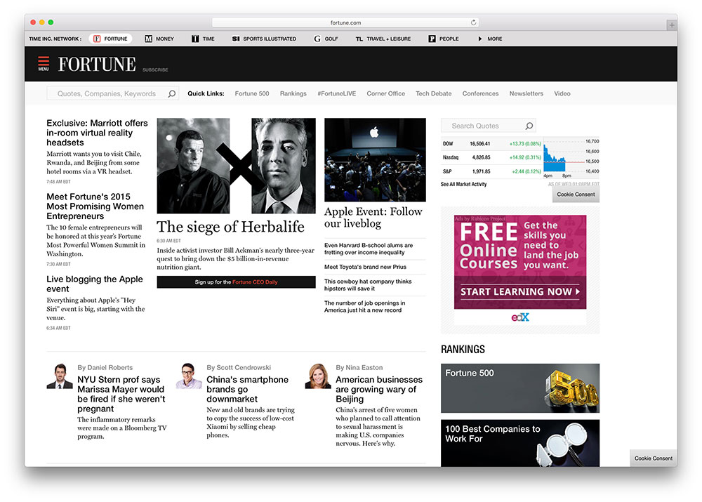
Fortune is yet another well-known magazine from Time, Inc. The website is rather crowded with content, and there is lot less space for each single article or post on the homepage. This is normal on websites where the rate of content generation is very high and there are a great number of news stories worth reporting on in a small duration of time.
A very purposeful website created to bring breaking news and insightful articles from the world of business.
ProBlogger
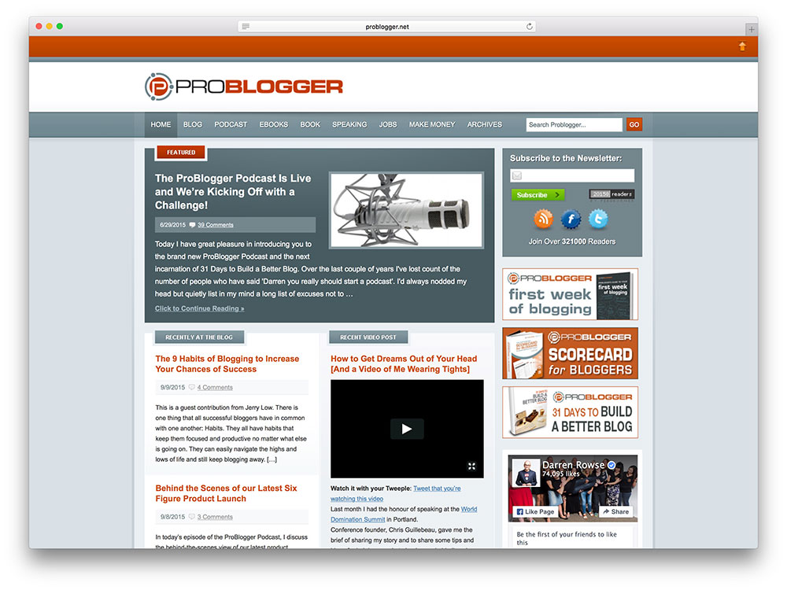
One of my favorite websites, an absolutely great read for any freelance writer or Internet marketer. The website has a blog, podcast content, ebooks and an incredibly popular job board.
You may not think much of the site’s design, but you’ll be amazed at how successful the website has been when it comes to connecting with audiences and attracting the right type of visitors. This is a fairly straightforward approach when creating what is essentially a blog that offers professional advice, tutorials and tips. The simplicity probably has a great deal to do with their success.
StartUp Weekend
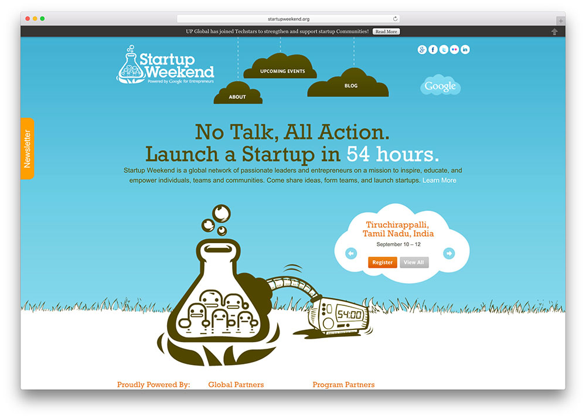
A well-designed website as you might expect, the menu is rather quirky in the form of cloud bubbles. The website is a little more than a landing page with some extra content regarding the event details of startup meets. But as far as its function which revolves around event management is concerned, the website is more than adequate and performs the job quite well.
Smithsonian National Museum Of African Art
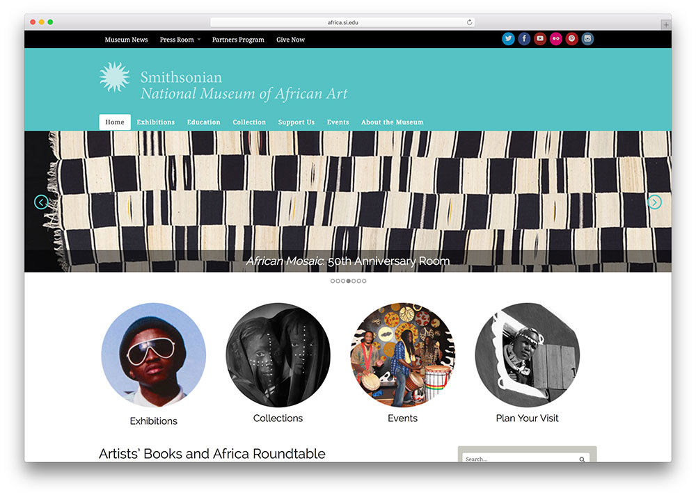
You can find all sorts of content on this website, including a ton of amazing images and information about events and educational programs. While the website might not fall into the category of being a corporate website, it certainly has a regal definition tempered by flair and style that you might find in a website that covers popular social culture.
I certainly wouldn’t have imagined a website for a museum using WordPress. So, I was pleasantly surprised when I stumbled upon the existence of this particular website.
Beyonce
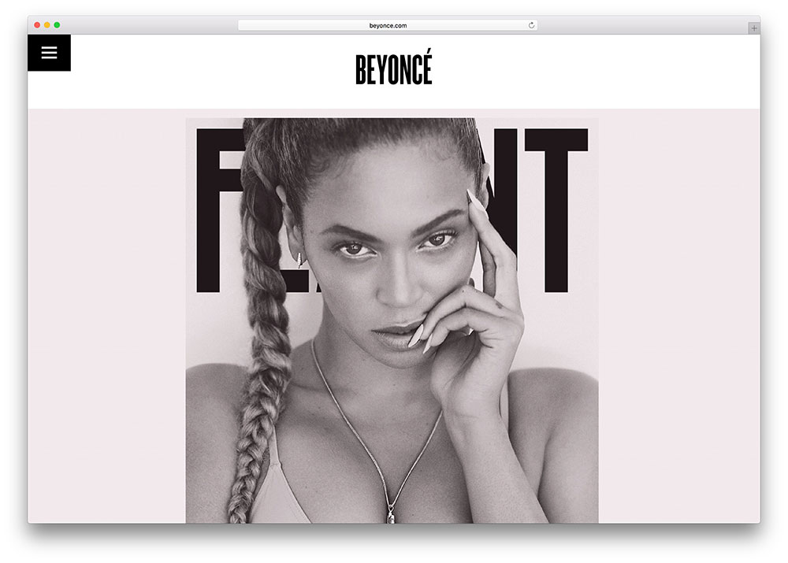
Yet another social and cultural icon of our times, a website completely dedicated to the artist Beyonce. The website has a lot of work from her photography catalogs. Furthermore, big bold large images cover the landing page of the site. Also, the side menu is rather large when invoked. Overall, it is a pretty awesome site for a great artist.
Usain Bolt
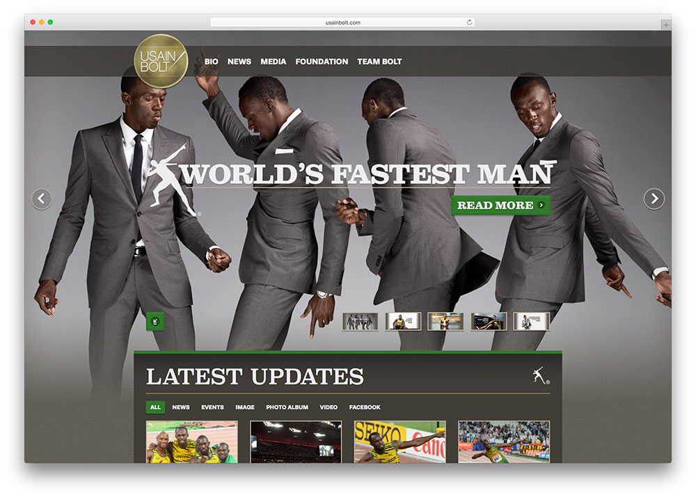
If you were ever asked to pick an athlete whose performance is beyond comparison in his or her field, Bolt would certainly be among the contenders. The Jamaican sprinter’s website is dedicated to his athletic achievements and contains a lot of images. It boasts a full screen slider followed by a news stream, reporting his most recent sporting feats and his other adventures.
Invisible Children
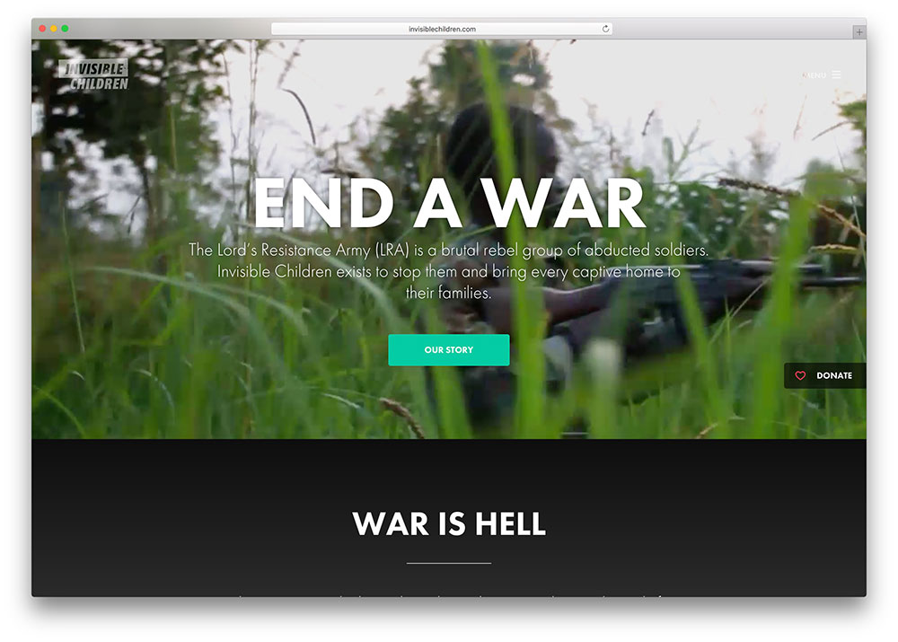
Invisible Children is a great website albeit about a sad topic. The website is the front for an NGO that fights for the rights of children who have been entrenched in the LRA and abducted for the purpose of serving as child soldiers.
The website itself is brilliant in terms of its user interface and has the right functionality to help combat and save as many children as possible.
AMC

The website for AMC, the makers of “The Walking Dead” and many other incredibly popular shows. AMC has a lot of powerful, full screen imagery intended to capture the curiosity and attention of prospective audiences to their TV shows. They also have a schedule information section, a blog and a shopping section.
Google Ventures
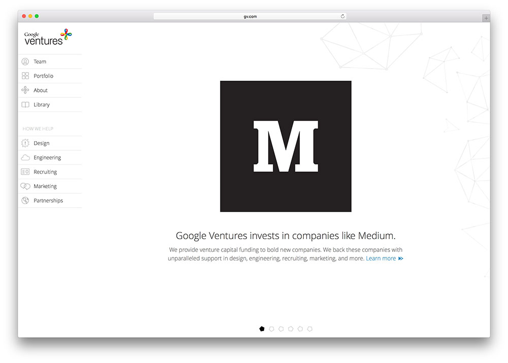
Minimalism at its best. The menu structure and icons it employ for navigation are great; there is very little in the way of distraction on their pages. Google Ventures primarily tells the story of how they’ve helped startups grow and scale. Their website also provides extensive information on the startups they’ve funded.
The Rolling Stones
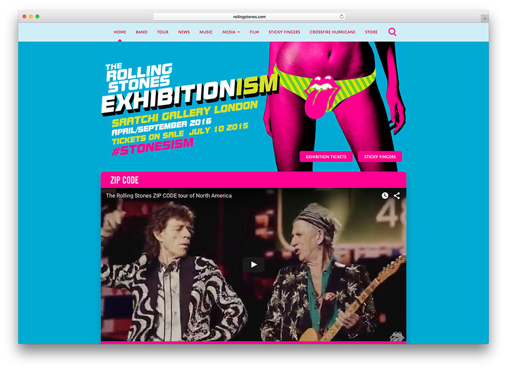
One of the most well-known bands and/or brands in the music industry for more than half century, their website uses WordPress. The website has a lot of pink against a blue background and lots of videos, given the nature of the content you might expect. That is true at least on the landing page. But, if you explore the website a bit more, you’ll also find a lot of text content equally and well presented.
Outbrain
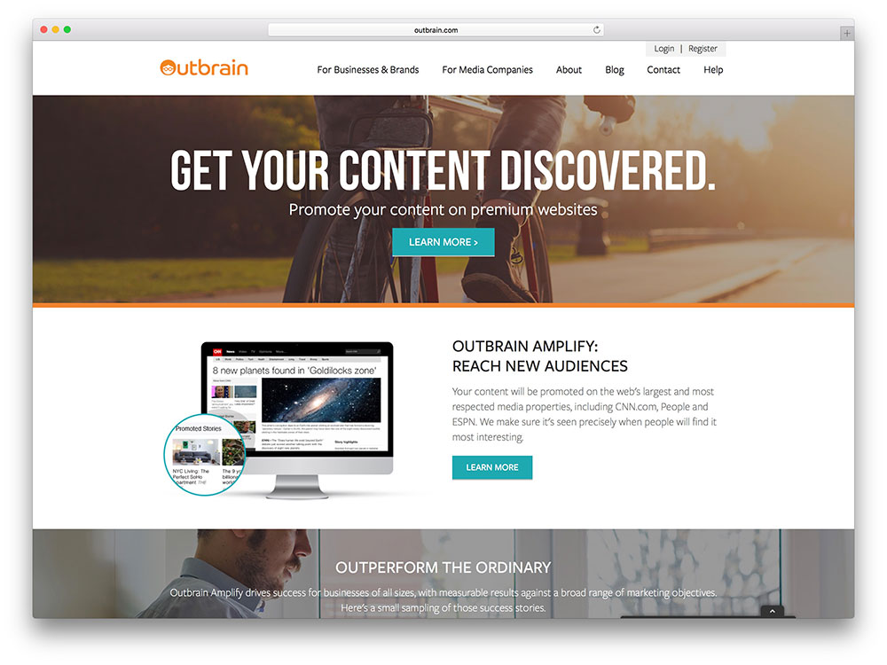
A professional content discovery service that makes more than 200 billion recommendations on a daily basis. The well-desinged website has a few full-screen images and uses the color orange very effectively indeed. There is very little text on the homepage and a menu that is as small as can be. The site is also incredibly easy to navigate.
Wired
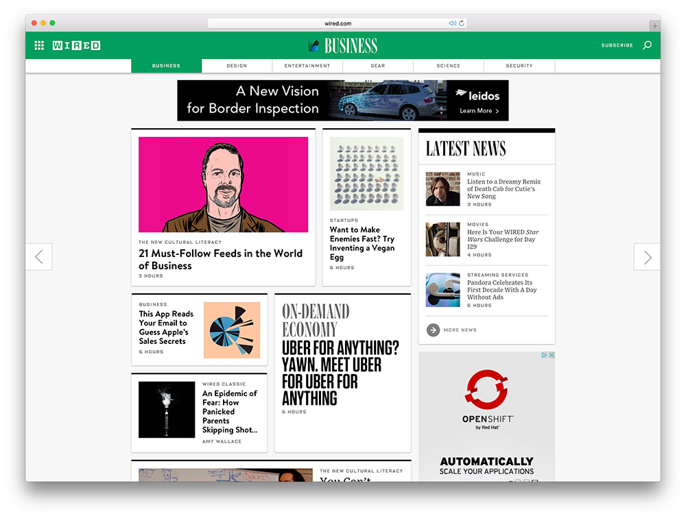
Wired is a magazine that brings you tomorrow’s technologies today. Their main website has a lot of content and a pretty large menu with a ton of options to choose from. It also uses a partial grid system in conjunction with side bars displaying a content stream of new information, as new ones are generated on the website.
We’ve seen so many websites ranging from corporations, small online businesses to non profit organizations and magazines leveraging WordPress as a means to publish content on the Internet. But WordPress is also used as a blog, and it is an awesome platform for your average blog.
But hold on, it isn’t just the average blog that uses WordPress. There are a great number of websites that use WordPress to run their blogs. Let’s have a look at a few of the best!
Sony
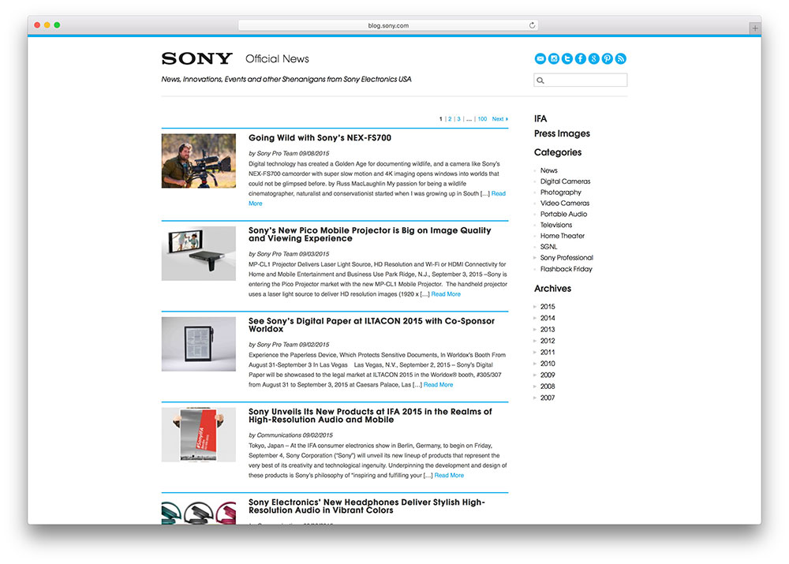
A very large corporate brand in the electronics and gaming industry renown for its gaming consoles and smart phones. Their official blog runs on the WordPress platform; there is not much in the way of style in the website. The site has been designed to add a lot of text content about their products and various product specifications. There is a humongous archive with a lot of information on their various products stretching back to 2007.
Play Station Blog
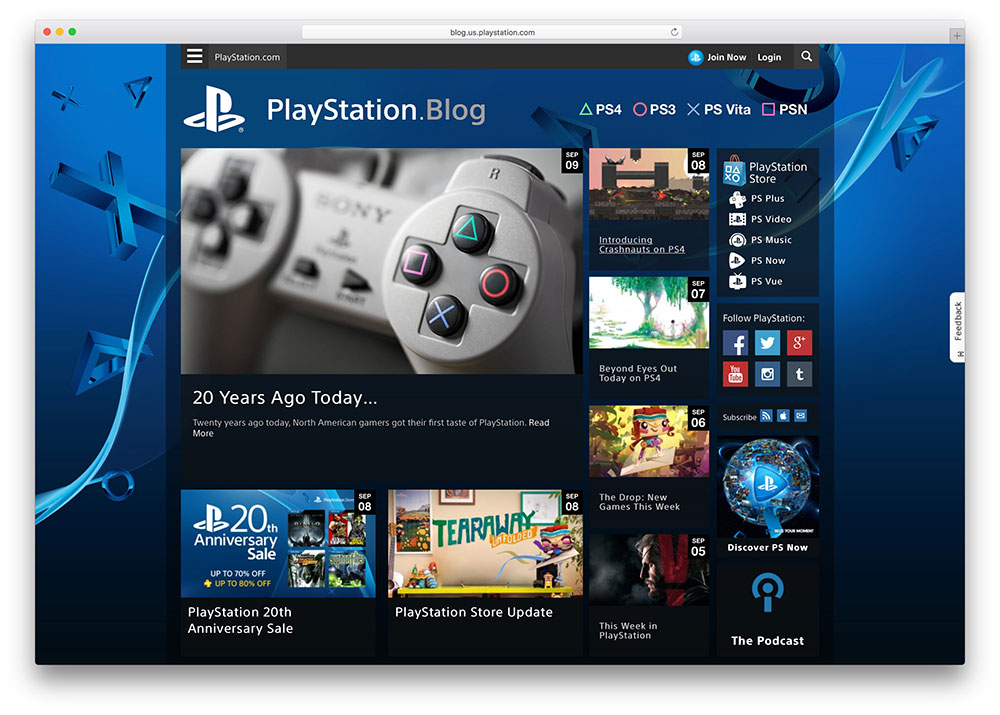
The website is pretty awesome with a portfolio/grid approach to video and image rich content. They’ve packed in a lot of images into a very small space at the top of the site. Moreover, as you scroll down, the site is divided into two columns, with large video content bearing individual posts.
TED Blog
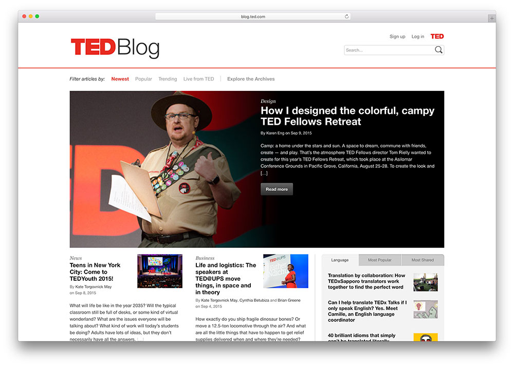
TED is another non-profit organization that leverages the power of WordPress to communicate ideas via the web. The website employs a menu with not too many options, followed by a full-screen article post and a two-column grid with more recently published articles. They also have quite an extensive footer. It directs you to the various TED programs and communication channels for interacting with TED.
Rackspace
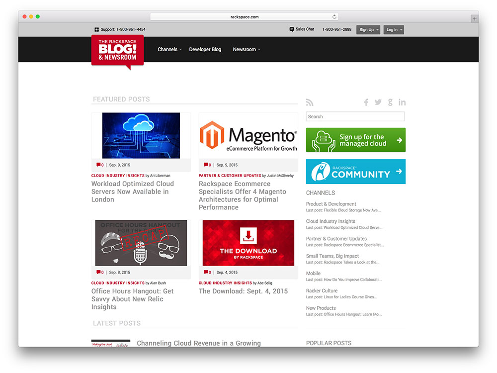
Rackspace is a WordPress blog, and is one of the leadings provider of raw computing infrastructure. A simple blog with with the posts divided into featured and latest posts. Obviously, as the blog of a service provider, there are a lot of link-backs to their services and their mother site.
Official LinkedIn Blog
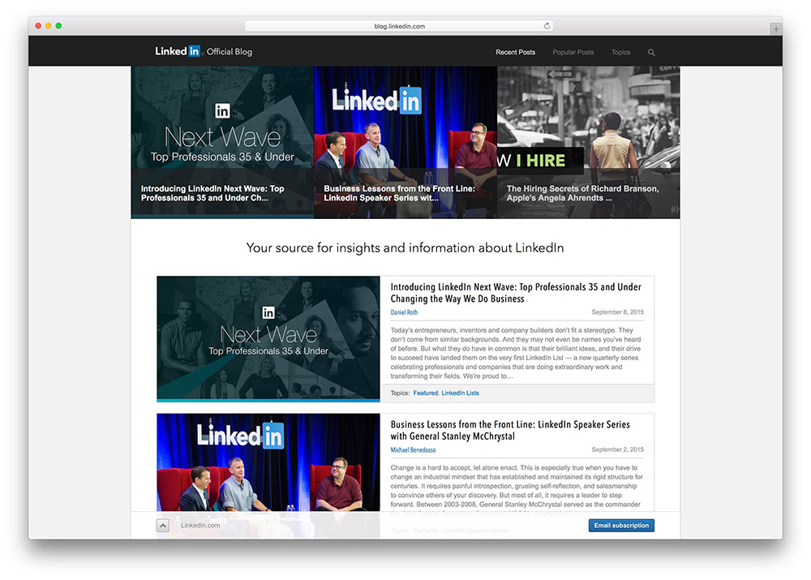
Yes, the most used professional social network’s blog runs on WordPress. The website is designed for one purpose, and that is made abundantly clear from the onset. Most of the content on the blog focuses on human resources, talent management and hiring practices across the globe.
SAP News Center
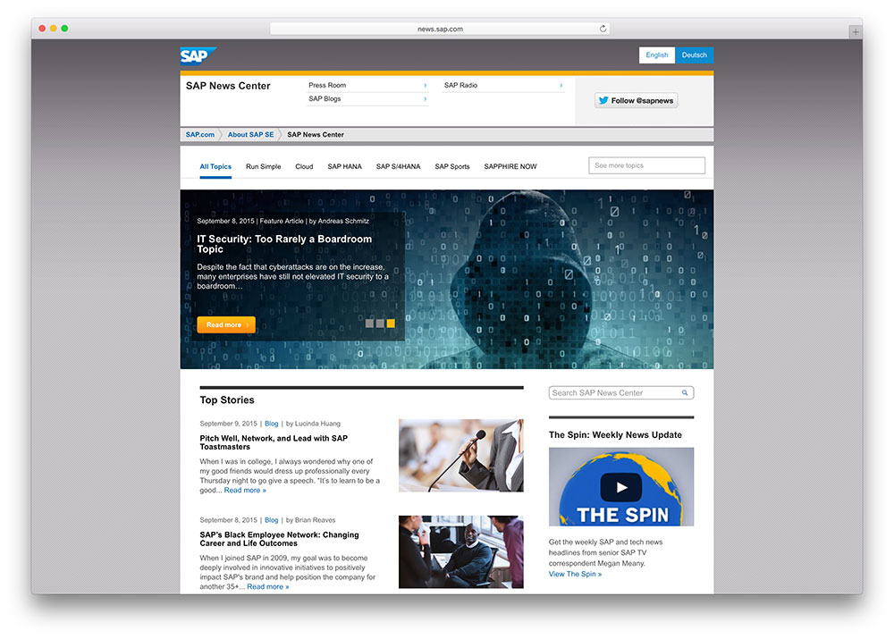
SAP is a multinational corporation that creates software for enterprise resource planning among others. Their blog delivers news from their various undertakings from all their divisions in different countries.
Facebook Newsroom
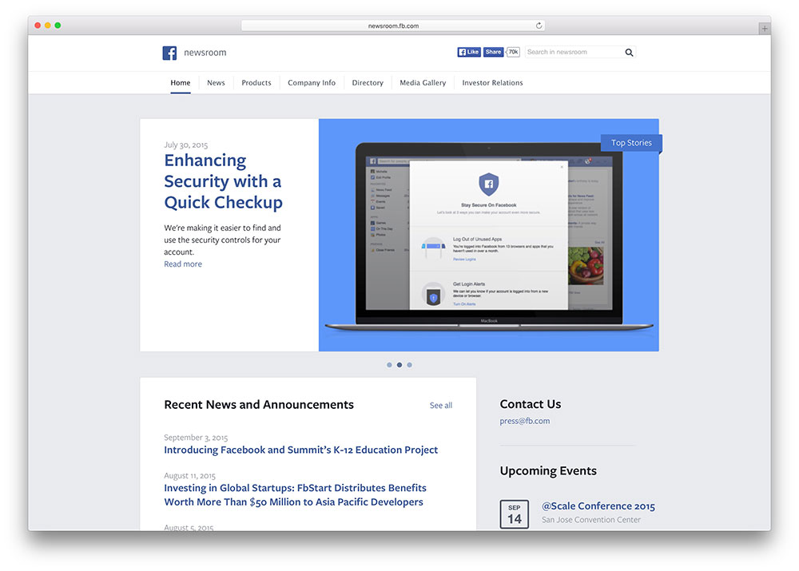
The world’s most popular social network’s official blog runs on WordPress. The site is minimal and has one large image/video on a slider system . It is then followed by simple plain text news with no thumbnails. Fairly simple site but remarkably readable as you might expect.
Final Thoughts
I hope I’ve amply demonstrated how WordPress can be used and how wide a spectrum of purposes/businesses/niches WordPress can handle. It is very unlikely that the site you want to create can not be best achieved with WordPress as the Content Management System.
If you are yet to create your first website or blog what are you waiting for – you have a wealth of knowledge available here on Colorlib and across the web to help you do just that.
But if you are a wee bit lazy like me, you can read an article I posted a while back – how to make a WordPress website. And we also have loads more on how to make your site secure and how you can increase your website’s performance.
If you enjoyed the post, please do share it with your friends. Also, subscribe to the Colorlib blog for more.
Looking for the best WordPress theme?
 Get it now!
Get it now!![]()